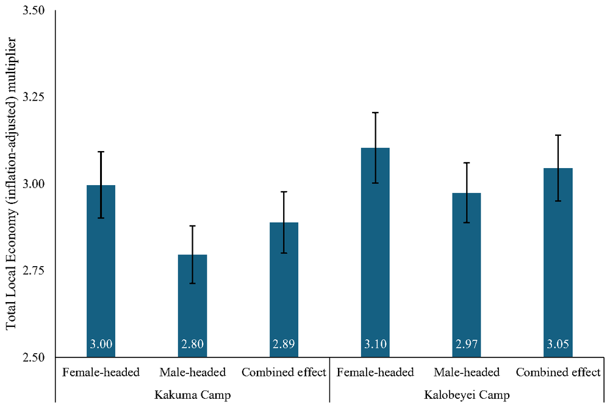

A Gendered Approach to Economic Impacts of Refugee Assistance
Aid given to refugees does not stay in the camp. It is spent, becomes income for local sellers and workers, and is spent again. The ripple is larger when aid is cash rather than food, larger when it reaches female-headed households, and the biggest winners are the host households next door.
Does it matter who receives refugee aid, and in what form?
Aid agencies choose whether to give refugees cash or food, and whom to give it to. This paper asks how those choices change the gains for the whole local economy around a refugee camp, looking separately at households headed by women and by men.
Kakuma and Kalobeyei, northwest Kenya
We use surveys of refugee households and refugee-owned businesses in the Kakuma camp and the Kalobeyei settlement, together with data on nearby host households in Turkana County.
A model of the local economy, built from survey data
We build a simulation model of the local economy from these surveys. It follows each shilling of aid: what refugees buy, who sells it, who those sellers hire and buy from, and how that new income is spent again. The model is run separately for female- and male-headed refugee households, and for cash and food aid.
Cash creates far more local income than food aid
Aid to female-headed households goes further
An extra refugee in a female-headed household adds about 22 to 23 percent more to local income than one in a male-headed household. Female-headed households spend a larger share of each extra shilling on locally grown food crops (62 versus 52 percent in Kakuma).
